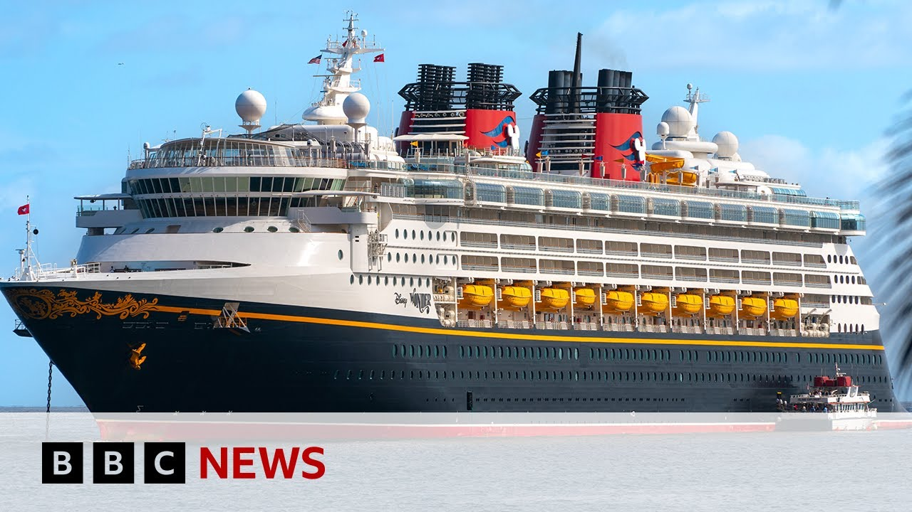

【BBC News 20250702 父亲跳下迪士尼游轮救起落水女儿】
Summary: A father and daughter were rescued after falling from a Disney cruise ship; the father jumped in to save his daughter, and both were safely recovered thanks to the crew's quick response.
摘要： 一对父女从迪士尼游轮落水后被救起；父亲跳入海中救女儿，由于船员迅速反应，两人均安全获救。

⏱️ Estimated Reading Time: 2 min
📚 四级生词 📚 六级生词 📚 雅思生词 📚 托福生词 📚 专八生词 📚 SAT生词 📚 考研生词 📚 GRE生词 📚 高考生词
Two people have been rescued after falling from a Disney cruise ship traveling from the Bahamas to Florida.
两人从一艘从巴哈马驶往佛罗里达的迪士尼游轮上落水后被救起。
Witnesses say a girl fell over a railing as her father was taking pictures and that he jumped in after her.
目击者称，一名女孩在父亲拍照时从栏杆上跌落，父亲随后跳入海中救她。
Rescued from the Atlantic Ocean, a dad and daughter who had gone overboard a cruise ship.
一对从游轮上落水的父女在大西洋中被救起。
The 14 deck Disney Dream was sailing back to port when the man jumped in to save his daughter.
14层的迪士尼梦幻号正驶回港口时，这名男子跳入海中救女儿。
Witnesses say the girl appeared to fall from the fourth deck when her dad took her picture against a railing.
目击者称，女孩似乎是在父亲靠着栏杆为她拍照时从第四层甲板跌落。
A lifeboat was deployed to rescue the pair.
一艘救生艇被派去救援两人。
The ship was moving quickly, so The ship was moving quickly, so quickly.
游轮移动得非常快，非常非常快。
It's crazy how quickly the people became little tiny dots in the sea and then you lost sight of them and and everyone was like cheering on the ship and just the the amazing quick response of Disney made a big difference.
令人难以置信的是，他们很快变成了海中的小点，随后从视线中消失，船上所有人都在欢呼，迪士尼的迅速反应起到了关键作用。
The 4,000 person capacity Disney Dream had been sailing for 4 days around the Bahamas.
可容纳4000人的迪士尼梦幻号已在巴哈马附近航行了4天。
The incident happened on the last day of the cruise.
事件发生在游轮旅程的最后一天。
The ship returned to port in Florida as normal.
游轮如常返回了佛罗里达的港口。
Disney confirmed in a statement that two passengers were rescued and said, "We commend our crew members for their exceptional skills and prompt actions which ensured the safe return of both guests to the ship within minutes."
迪士尼在一份声明中确认两名乘客获救，并表示：“我们赞扬船员的出色技能和迅速行动，确保两名乘客在几分钟内安全返回船上。”
While it is rare for passengers to fall from cruise ships, rescues aren't often successful.
尽管乘客从游轮上落水的情况罕见，但救援成功的情况并不多。
According to a Cruise Lines International Association report in 2019, 25 people fell overboard that year from cruise ships and only nine were saved.
根据国际邮轮协会2019年的报告，当年有25人从游轮上落水，仅9人获救。
Maria Smith, BBC News.
玛丽亚·史密斯，BBC新闻。